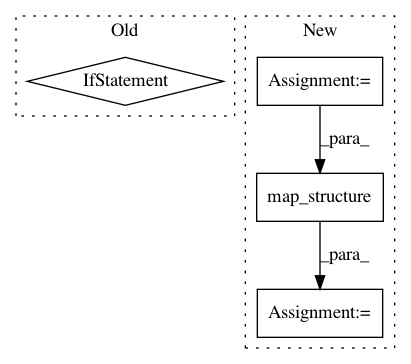

1775e89f262111791fabfd40f80a24f74738fe54,rllib/models/catalog.py,ModelCatalog,get_action_dist,#Any#Any#Any#Any#,107
Before Change
return partial(dist, input_lens=action_space.nvec), \
int(sum(action_space.nvec))
// Dict -> TODO(sven)
elif isinstance(action_space, gym.spaces.Dict):
// TODO(sven): implement
raise NotImplementedError(
"Dict action spaces are not supported, consider using "
After Change
elif dist_type in (MultiActionDistribution,
TorchMultiActionDistribution) or \
isinstance(action_space, (gym.spaces.Tuple, gym.spaces.Dict)):
flat_action_space = flatten_space(action_space)
child_dists_and_in_lens = tree.map_structure(
lambda s: ModelCatalog.get_action_dist(
s, config, framework=framework), flat_action_space)
child_dists = [e[0] for e in child_dists_and_in_lens]
input_lens = [e[1] for e in child_dists_and_in_lens]
return partial(
(TorchMultiActionDistribution
if framework == "torch" else MultiActionDistribution),
In pattern: SUPERPATTERN
Frequency: 3
Non-data size: 4
Instances
Project Name: ray-project/ray
Commit Name: 1775e89f262111791fabfd40f80a24f74738fe54
Time: 2020-04-28
Author: sven@anyscale.io
File Name: rllib/models/catalog.py
Class Name: ModelCatalog
Method Name: get_action_dist
Project Name: ray-project/ray
Commit Name: 1775e89f262111791fabfd40f80a24f74738fe54
Time: 2020-04-28
Author: sven@anyscale.io
File Name: rllib/models/tf/tf_action_dist.py
Class Name: MultiActionDistribution
Method Name: logp
Project Name: deepmind/sonnet
Commit Name: ce11b92597b32bccf9999e94550855e55e02da9b
Time: 2018-10-16
Author: adriap@google.com
File Name: sonnet/python/modules/basic_rnn.py
Class Name: DeepRNN
Method Name: _build